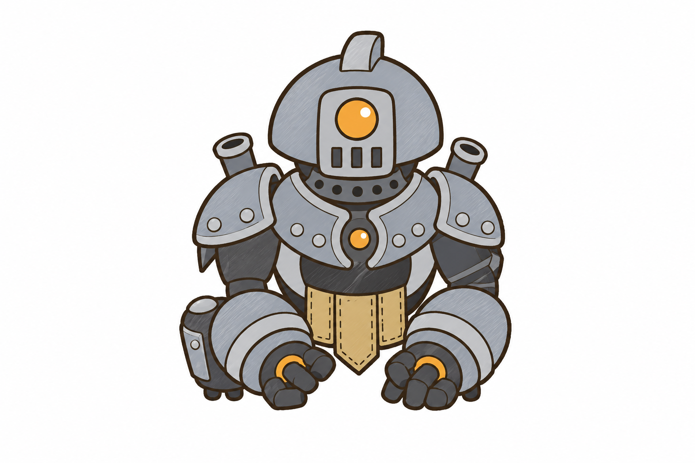

Robot hủy diệt cổ đại — DẠNG 1 NON (robot con thép mới): rig và animation
Cùng xương, cùng clip với dạng 2; giáp vai, cẳng tay, ống xả nhỏ lại, đầu vòm to. Ảnh động vẽ bằng bộ vẽ của mình ở 30 khung/giây; khối
xám là chỗ đối thủ. Chưa có VFX (cầu năng lượng, cầu to, tên lửa, nổ): làm ở bước vào game. Trang Spine Web Player:
robot_co_non/rig/xem.html. Dạng 2: robot_co_xem_rig.html.
Chiêu cuối: đứng lên, mở giáp ngực lộ lõi lục giác, phóng 7 tên lửa (đầu đạn tắt dần), khép ngựcChiêu mana: hai tay giơ lên trời, lòng bàn tay xoay liên tục, vung đập xuống (ném cầu)Đánh thường: giơ tay phải, ổ nắm đấm xoay tụ cầu, bắn, cẳng tay thụt lùiRa sân: bộ phận bay bezier vào lắp ráp, mặt nạ cuối, mắt bật sángĐứngĐi: hai tay đung đưa nhẹ, so leTrúng đòn (mắt chớp tắt)Chết (mặt nạ rơi, mắt tắt) rồi mờ dần

Concept A dạng 1 đã duyệt (để so)Rig dạng 1 ghép xong, khung 0 idle